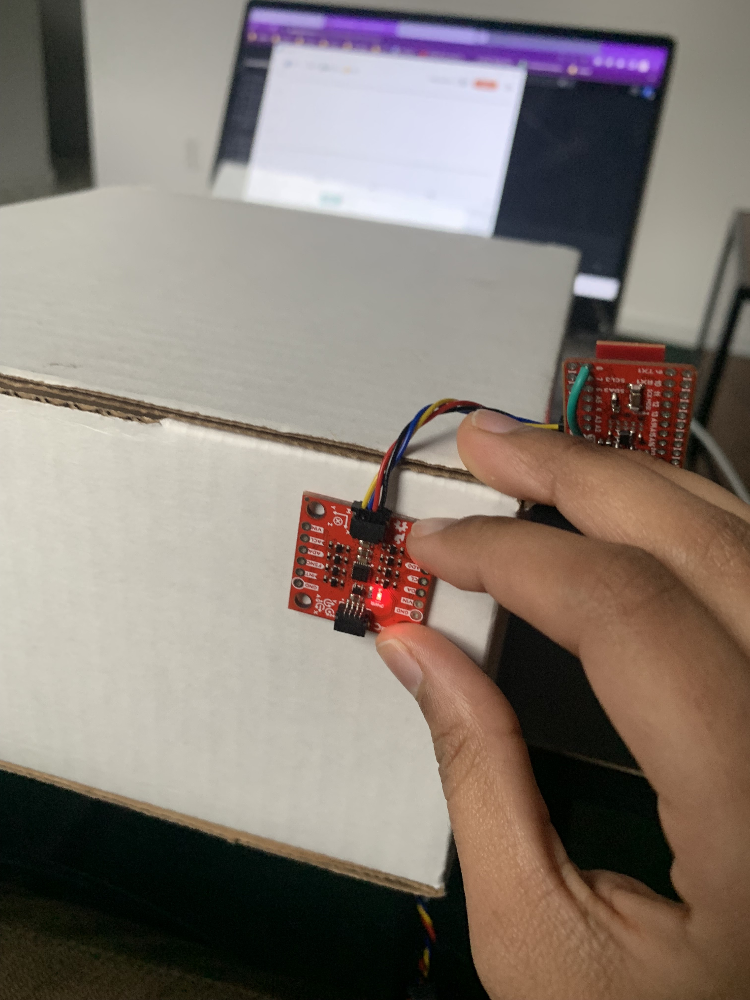
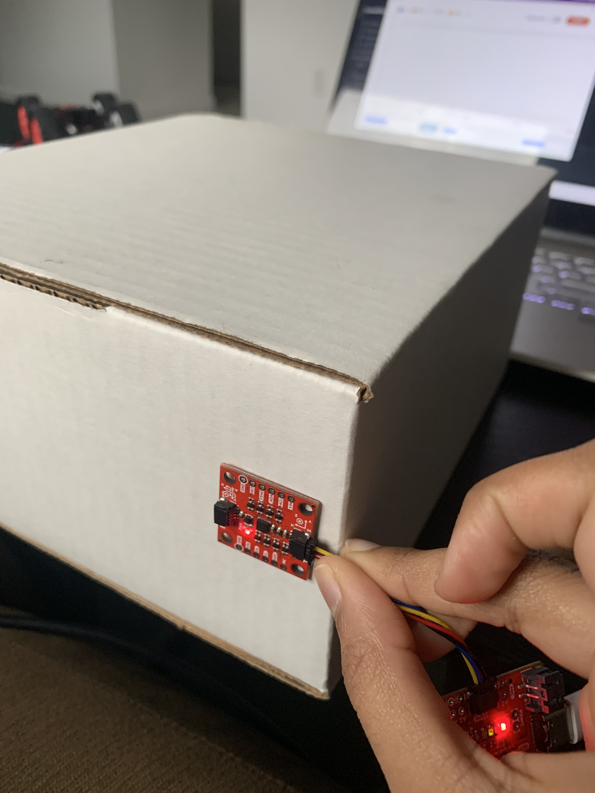

Lab 4 IMU
The goal of this lab was to use the accelerometer and gyroscope on the 9DOF IMU sensor to collect accurate and reliable information about the robots position.
IMU Set up
I connected the IMU to the QWIIC breakout board
I ran the provided example code and observed the raw accelerometer and gyroscope values using the serial monitor and plotter. The accelerometer data only changed when the IMU was in motion, the data was pretty noisy, and 1 dimension showed the acceleration due to gravity. The gyroscope data was cleaner and simply rotating the IMU was enough to see changes in the data.
This image shows the outputs from the example code when the IMU is flat.

The AD0_VAL definition should be set to 1 since the ADR jumper was not closed on the IMU.
Accelerometer
I used the IMU code from lecture to convert the raw accelerometer values to pitch and roll. I switched pitch and roll to match the diagram shown in class.
I ran the car over the IMU so that it was collecting data in the presence of some noise from the motors. I ran an FFT on that data using this tutorial. The data was not very noisy but I decided to add a low pass filter because the accelerometer will be more prone to noise when it is on the car. The necessary data seemed to be in the <1Hz range so I chose alpha = 0.2 and low passed both the pitch and roll. I ran the FFT again and noticed that the noise had reduced.
I then measured pitch and roll at -90, 0, & 90 degrees
Pitch = Roll = 0
Pitch = 90
Pitch = -90
Roll = 90
Roll = -90
The accelerometer was quite accurate and consistent especially after adding the low pass filter. However, if pitch or roll shifted more than 90 degrees, the other value would behave unexpectedly. So it is accurate in the 90 to -90 range.
Gyroscope
I also used the lab example to get pitch, roll, and yaw from the raw gyroscope data.
I played around with it and I noticed that it was accurate (better than accelerometer values) and not noisy but any sudden changes would cause the error to grow quickly and the data would be biased.
To fix the biasing issue but take advantage of the accuracy I created a complementary filter. I played around with the weights for the gyro data and the accelerometer data and decided to give 90% of the weight to the gyro. This resulted in the most accurate but stable measurements. The constraint from the accelerometer remained, that is, if the pitch or roll exceeds a 90 degree rotation, the other value will behave unexpectedly. So, it is accurate and reliable in the 90 to -90 range as seen in the video below.
Sample Data
I edited the BLE_arduino code from the previous labs so that I could send both TOF and IMU data to the computer. I first just sent the IMU data and noticed that the sampling time was about 9ms while the TOF sampling rate was about 11ms. Because of this difference in samping rates I decided to create another BLE string characteristic so that they could both be called simultaneously and data will be sent to the computer whenever it is ready in 2 separate strings.
Image of IMU data (0 degrees pitch and roll) sent over BLE and parsed using call back function.
I noticed that the first few values were always noisy but after a few seconds that data was accurate. I tried debugging this issue but I was not successful. When I am using this data as control inputs I will make sure to add a delay to ensure I am using accurate measurements.
5 seconds of IMU and TOF data sent over BLE and parsed using separate call back functions.
I noticed that the sampling rate was significantly reduced when both were being sent so I decided to collect and send 5s of data at a time instead of sending new measurements as they are received.
Cut the Coord
I cut the connector off of the 650mAh battery, one wire at a time, and soldered it to the JST connector so that it can be used to power the Artemis as shown. I ensured that I was still able to send data via bluetooth when the Artemis was only powered by the battery.
The 850mAh battery will be used to power the RC car because the car requires more power and therefore the extra capacity from the battery will allow the car to run for longer.
Stunt
I first played with the RC car to get a handle on its movements. I also picked it up and pressed the buttons on the remote so I could more closely inspect which way the wheels were turning.
I then attached the Artemis along with the battery and sensors to the car and made it do some stunts while sending sensor data over BLE.
I plotted the received data and noticed expected behavior.